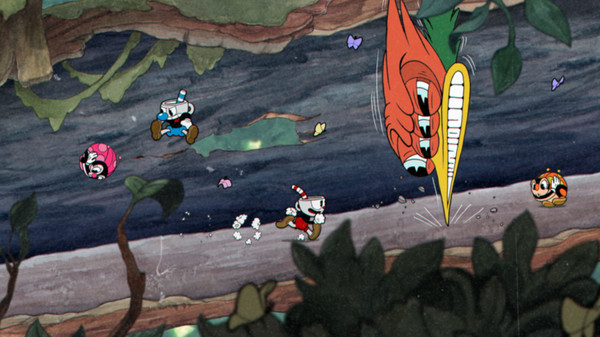

Cuphead
Sistema operacional: Windows 7
Processador: Intel Core2 Duo E8400, 3.0GHz or AMD Athlon 64 X2 6000+, 3.0GHz or higher
RAM 3GB
Placa de vídeo: Geforce 9600 GT or AMD HD 3870 512MB or higher
Espaço em disco rígido: 4 GB.
Historia
No lugar fictício de "Ilha Tinteiro", Xicrinho (nome de Cuphead na adaptação brasileira do jogo) e seu irmão Caneco (nome de Mugman na adaptação brasileira do jogo) são dois garotos amantes da diversão que vivem sob o olhar atento do Velha Chaleira. Contra os avisos do ancião, os irmãos se aventuram longe de casa, acabam entrando no Cassino do Diabo e começam a jogar dados. Após uma série de vitórias, o próprio Diabo se oferece para aumentar as apostas, dizendo que se Xicrinho e Caneco puderem ganhar mais uma rodada, eles receberão todo o dinheiro no cassino, mas se perderem também perderão suas almas. Xicrinho perde no jogo de dados e junto a Caneco imploram por misericórdia. O Diabo faz um acordo com eles: se conseguirem coletar todos os "contratos de alma", que dão direito à posse das almas, de seus devedores fugitivos até a meia-noite do dia seguinte, eles poderão ter uma chance. Eles visitam o Velha Chaleira, que lhes dá uma poção que lhes permite disparar rajadas de seus dedos para ajudar em sua busca, mas também os adverte que os devedores podem se transformar em monstruosidades quando forem cobrados.
Os irmãos viajam pelas Ilhas Tinteiro (1, 2 e 3), lutando contra os moradores que perderam suas almas para o Diabo, a fim de obter seus contratos. Ao entrar na segunda ilha, o Velha Chaleira os aconselha a "fazer a coisa certa" quando encontrarem com o Diabo novamente. Na entrada da terceira ilha, aparece uma cena em que o Rei Dado adverte o Diabo sobre a haver "algo suspeito" sobre os garotos. Após enfrentar uma série de inimigos poderosos e reivindicar todos os contratos, eles retornam para o cassino e encontram o gerente, o Rei Dado, que bloqueia o caminho. Ele perdeu uma aposta com o Diabo, presumivelmente sobre se Xicrinho e Caneco seriam capazes de completar sua tarefa, e coloca os irmãos para jogar uma espécie de "jogo de tabuleiro", enfrentando alguns de seus capangas pelo caminho. Ele, finalmente, decide confrontar Cuphead e Mugman, mas é derrotado por eles, dando passagem para encontrar o Diabo.
O Diabo, ao ver os irmãos com todos os contratos que ele pediu, exige que eles entreguem os contratos em troca de "se juntar a sua equipe". Se o jogador aceitar, o Diabo transforma Xicrinho e Caneco em seus lacaios demoníacos e o jogo termina, com a tela inicial tendo sua música de trás para frente. Se o jogador declinar, o Diabo fica furioso com a recusa dos irmãos em honrar o acordo e os enfrenta pessoalmente. No fim, Xicrinho e Caneco triunfam sobre ele, e queimam os contratos de alma, liberando e devolvendo a alma de todos os devedores, que por sua vez honram os irmãos pela bravura e nobreza de seus atos com gritos de comemoração.
Jogabilidade
Além dos gráficos extremamente detalhistas e fiéis aos cartoons da Era de Ouro da animação americana, o jogo chama a atenção pela particularidade, lembrando os jogos de plataforma dos anos 90 em 8 e 16 bit. É possível perceber referências a alguns desses jogos, como Contra, Mega Man X, Gunstar Heroes, Street Fighter III e Thunderforce (quando das fases aéreas). As fases são repletas de inimigos, que atacam das mais diversas formas: saltando em direção ao jogador, caminhando ou atirando projéteis. O jogo também possui fases aéreas, com o personagem pilotando um avião, onde o objetivo é destruir os inimigos atirando projéteis e bombas. Outra referência a jogos vintage está no sistema de navegação entre fases através de um mapa ao estilo Super Mario World e Donkey Kong Country. A grande dificuldade do jogo também é um fator marcante.